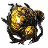

Putrid Seed Calc · 3.30These 30 hidden anointments (like Adaptive Steel) appear floating on the passive tree canvas matching PoB 3.30 and enter the Putrid Seed pool when using Prismatic Oil.
Take an uncorrupted Putrid Seed to Sister Cassia and anoint it with 3 distinct Oils from the 14 standard oils to roll 4 random 1 added passive skill is <Notable> enchants without corrupting the jewel. When placed into one of the 6 Outer Large Jewel Sockets, it grows 4 notable passives plus 8 socket-specific small passives.
Every anointable notable has a 3-oil recipe with maximum tier T_node = max(tier(recipe)). Across 117 audited Covens Trade seeds and 1,238 <4-enchant listings (0 violations), each oil maps to a disjoint maxTier == oil bucket of size: Clear (1), Sepia (3), Amber (6), Verdant (10), Teal (15), Azure (21), Indigo (21), Violet (34), Crimson (43), Black (54), Opalescent (65), Silver (78), Golden (90), Prismatic (31).
1/3 chance, then draws uniformly without replacement from that oil's maxTier == oil bucket. If you include Clear (size 1) or Sepia (size 3), repeated hits exhaust the bucket and yield fewer than 4 enchants (Clear: 59.3% 4e / 29.6% 3e / 9.9% 2e / 1.2% 1e; Sepia: 98.8% 4e / 1.2% 3e; Amber+ always yields 4 enchants). Because each bucket's hit rate depends only on its own size, pairing a chase oil with cheap oils (e.g. Clear + Sepia + Prismatic) gives the exact same hit chance per Prismatic notable (4/93 = 4.30%) as Silver + Golden + Prismatic.maxTier <= max(chosen3) matching oils.1:2:3 weighted overlap, and strict 3-oil subset).Official Path of Exile 3.30 Trade maps all 472 notables — 442 standard + 30 hidden Blight-exclusive anointments (such as Adaptive Steel) rendered directly on the passive skill tree canvas — to enchant.stat_3599615742|<node_id>. Use the Hidden Anoints drawer or click them straight on the tree to target and optimize oil recipes.
Free, ad-free community tool ·